Máquina virtual, instalación y particiones
1.1. Crea en VirtualBox una máquina llamada Windows-NombreApellido con 4 GB de RAM y un disco de 50 GB.
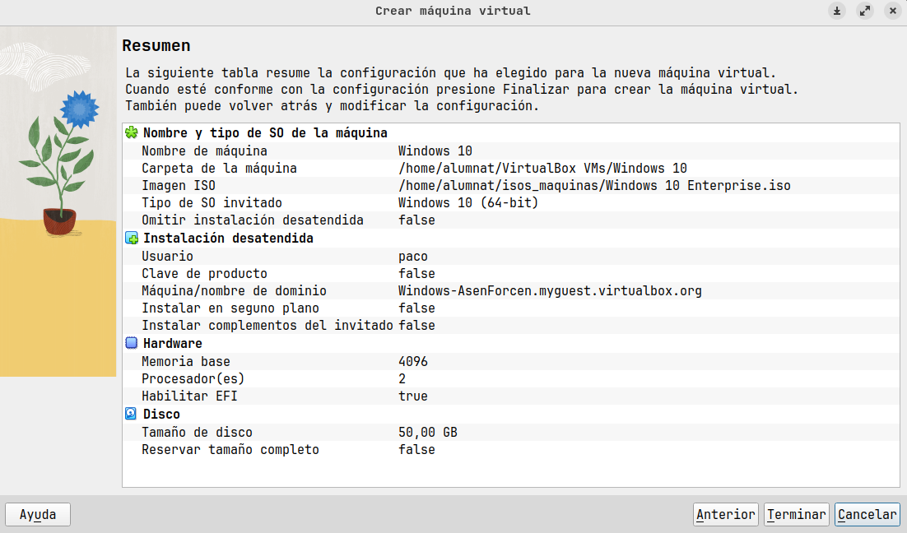
1.2. En Configuración → Red, comprueba que el Adaptador 1 está habilitado y en modo NAT.
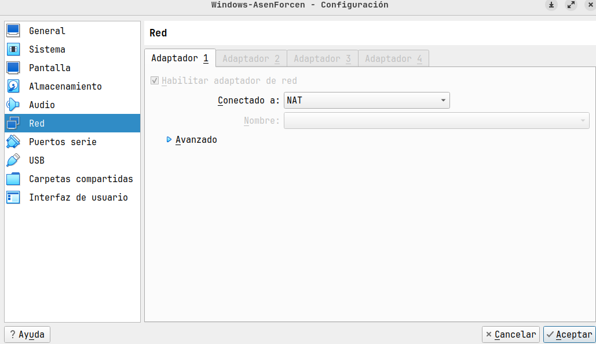
1.3. Carga la ISO de Windows 10 y comienza la instalación (idioma, usuario con tu nombre y contraseña).
1.4. En la pantalla de particiones, crea una partición de 30 GB para Windows y deja los otros 20 GB sin asignar.
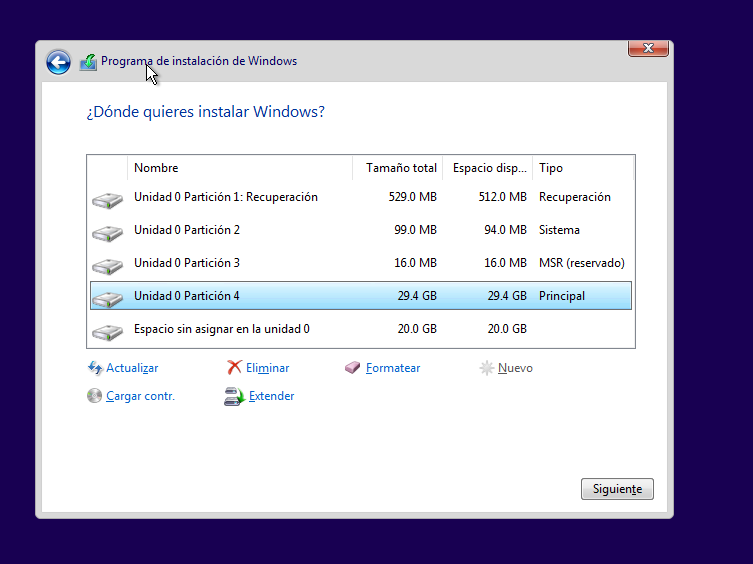
1.5. Cuando arranque Windows, abre diskmgmt.msc y con el espacio libre crea una partición NTFS con la letra D: y el nombre DADES.
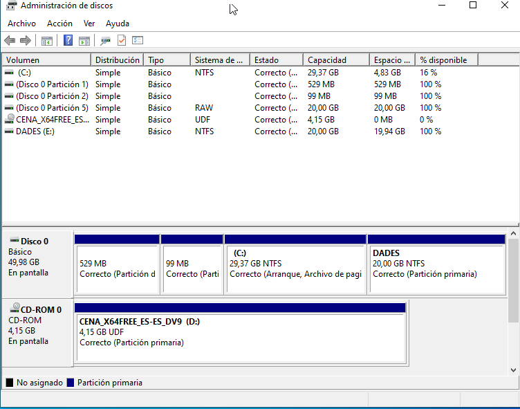
↑ Volver al índice
Licencias
2.1. Ve a Configuración → Sistema → Activación y anota la edición de Windows y si está activado.
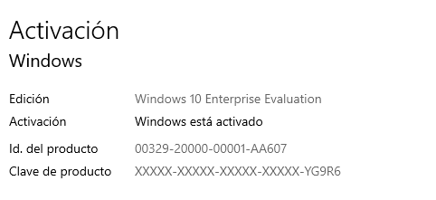
2.2. En cmd, ejecuta slmgr /xpr (estado de la activación) y slmgr /dli (tipo de licencia).
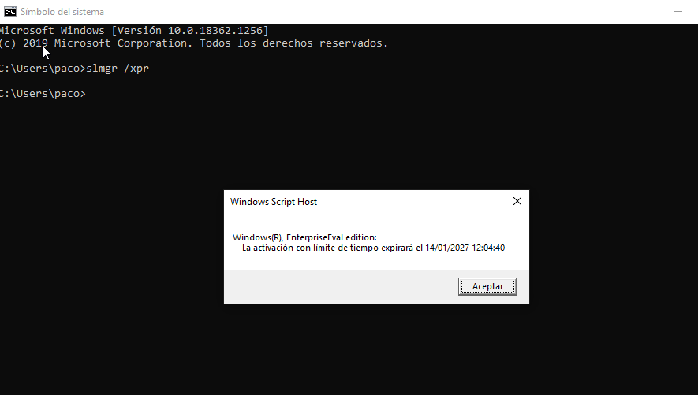
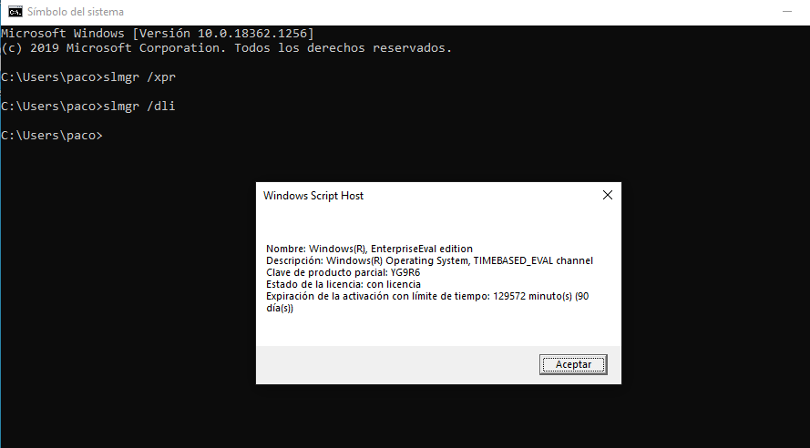
2.3. Busca el precio de Windows 11 Home y Pro en la tienda oficial de Microsoft y en otra tienda.
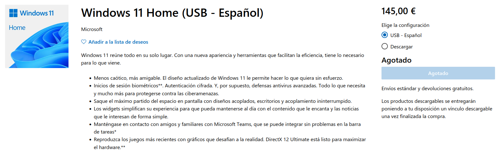
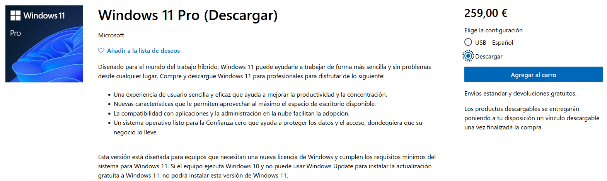
2.4. Busca qué es una CAL (Client Access License) en la web de Microsoft.
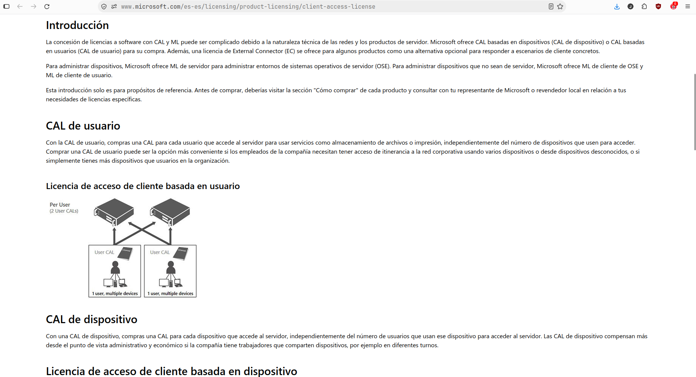
↑ Volver al índice
Comandos básicos
3.1. Entra en el Escritorio con cd Desktop, crea una carpeta con mkdir practica y entra en ella con cd practica.
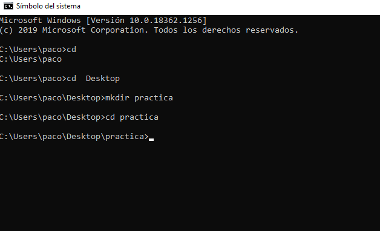
3.2. Crea un archivo con echo hola > nota.txt y comprueba que está ahí con dir.
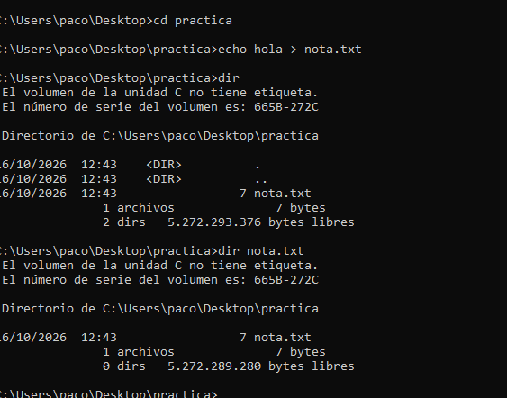
3.3. Haz una copia: copy nota.txt copia.txt y compruébalo con dir.
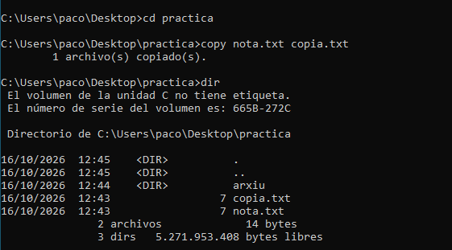
3.4. Crea la carpeta mkdir arxiu y mueve allí la copia: move copia.txt arxiu.
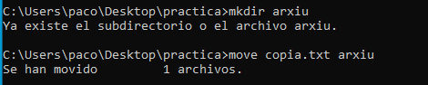
3.5. Cambia el nombre de un archivo, ren nota.txt notes.txt, y de una carpeta, ren arxiu backup, y compruébalo con dir.
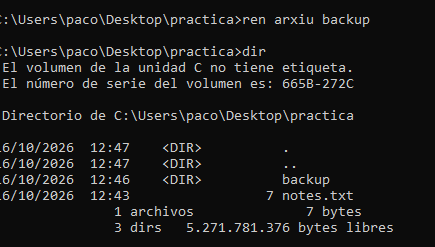
3.6. Entra en la carpeta con cd backup, mira qué hay con dir y sal con cd ..
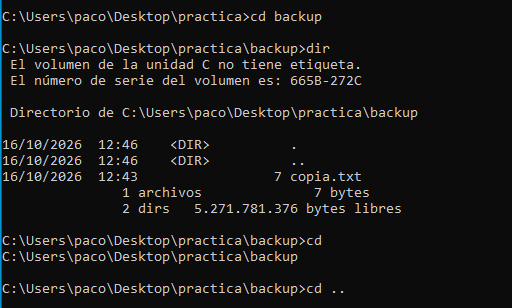
3.7. Muestra la estructura con tree /f.
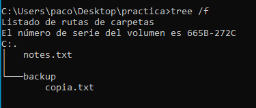
3.8. Borra el archivo con del notes.txt y compruébalo con dir.
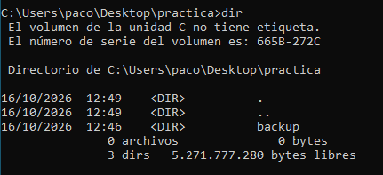
3.9. Limpia la pantalla con cls.
↑ Volver al índice
Aplicaciones y puntos de restauración
4.1. Busca Crear un punto de restauración, activa la protección del sistema en el disco C: y crea un punto llamado Antes de Chrome.
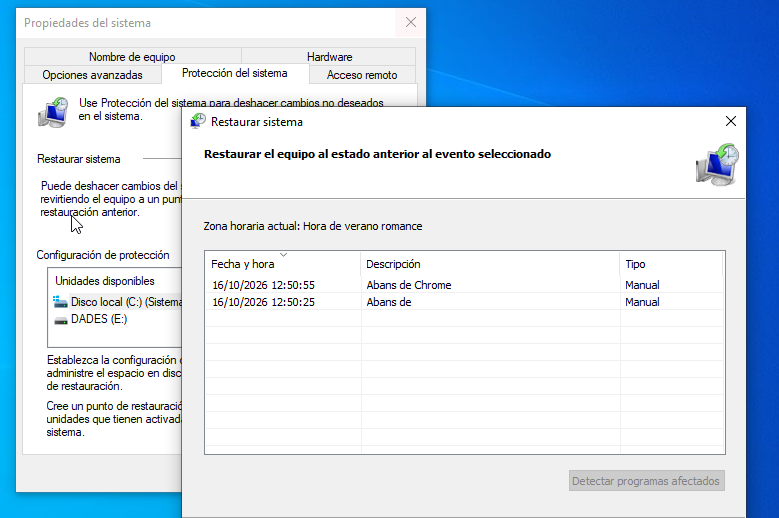
4.2. Descarga Chrome de la web oficial de Google, instálalo y ábrelo.
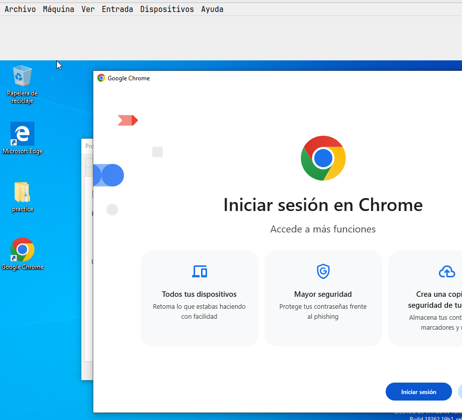
4.3. Ve a Restaurar sistema, elige el punto creado y pulsa Buscar programas afectados: debe aparecer Chrome.
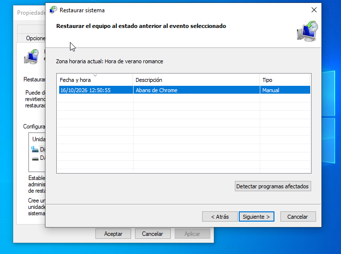
4.4. Restaura el sistema y comprueba que Chrome ya no está.
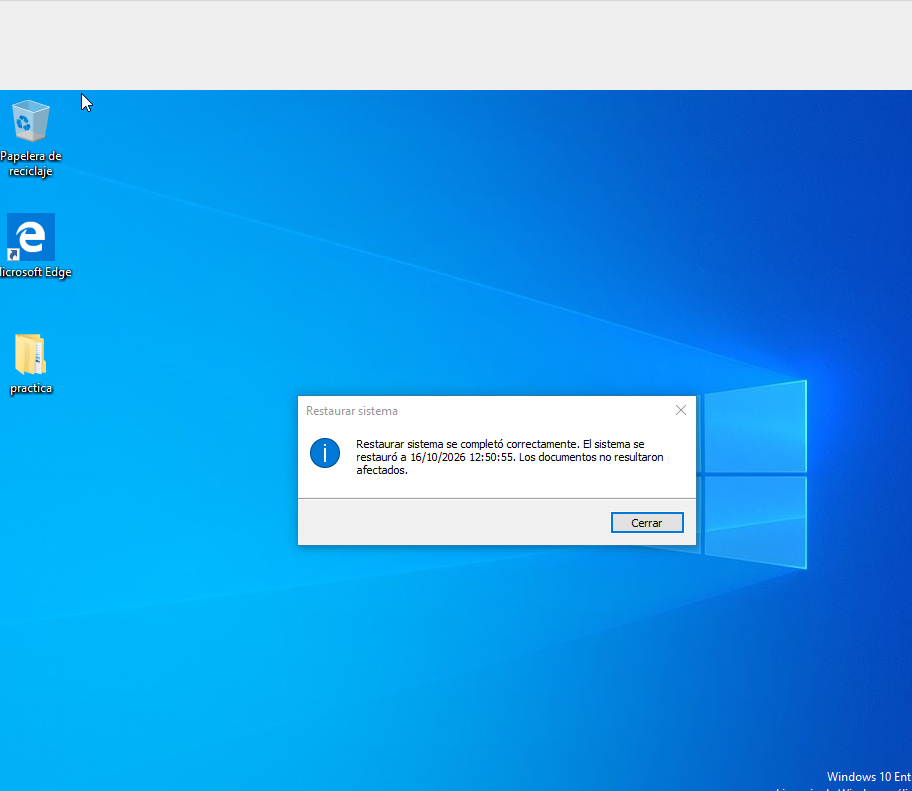
↑ Volver al índice
Red
5.1. Con el adaptador en NAT, ejecuta ipconfig, ping google.com y ping 8.8.8.8.
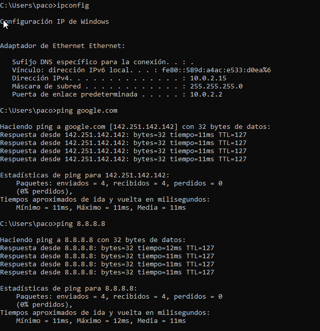
5.2. En VirtualBox, Dispositivos → Red, desmarca Conectar el cable y repite los dos ping.
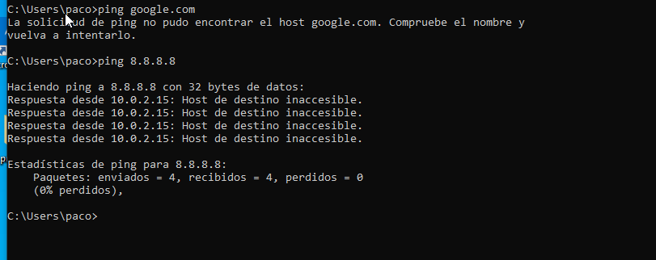
5.3. Vuelve a conectar el cable y cambia el adaptador a Adaptador puente. Repite ipconfig y los dos ping.
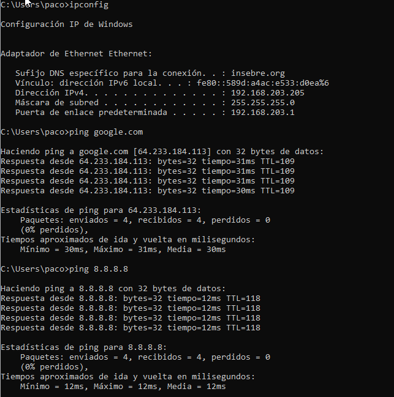
5.4. En Windows, configura el DNS manual 1.2.3.4 y repite los dos ping. Después vuelve a poner el DNS en automático.
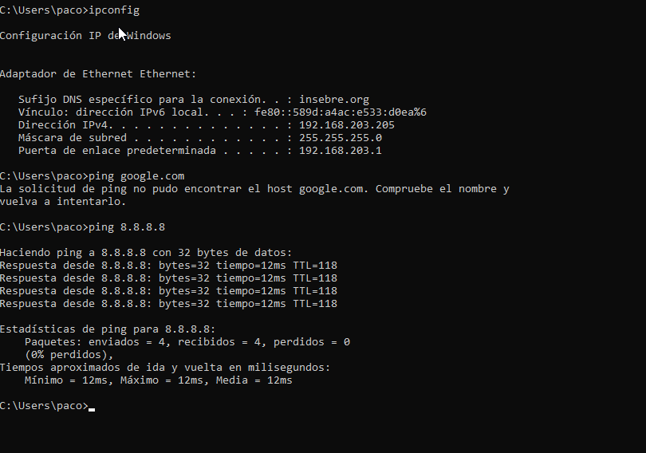
↑ Volver al índice